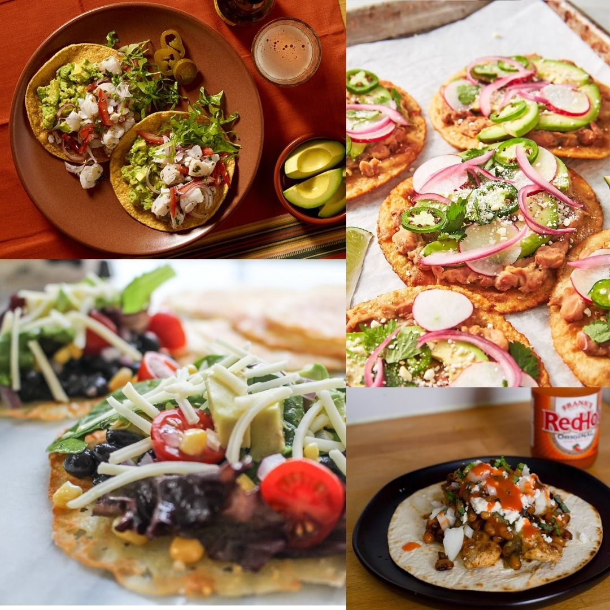

Mexico has long been among the world’s most popular holiday destinations, attracting sun seekers and food lovers alike. If you’re lucky enough to be planning a trip, make sure you sample the best tastes and flavours the country has to offer with our roundup of the top 5 dishes to try while you’re there.
TIME: ⌚ 60 mins ★★★★☆
4/5 AVERAGE RATING AS PER USERS servings per dish:6
MUSIC PLAYER
TOMATO SALSA RECIPE
INGREDIENTS:
Wash hands with soap and water.
Preheat oven to 350 degrees F.
On a baking sheet, arrange tortillas or tostados in a single layer. If using tortillas, spray both sides with non-stick cooking spray and bake for 4 minutes or until crisp.
Mix refried beans and chili powder, if using.
Spoon 1/3 cup of refried beans on each tostada. Sprinkle with cheese.
Bake for 10 minutes or until cheese is melted.
Top each tostada with lettuce and tomato. Serve with salsa.
INSTRUCTIONS
Expert Tips
Tomatoes: To make my homemade salsa recipe you can use any variety of fresh red tomatoes. If your tomato peels are thick, then blanch and peel the skins before processing them. Canned tomatoes also work well in the recipe and can be easily replaced with fresh tomatoes.
Consistency: A perfect salsa does not have large bits or chunks in it, but it also is not smooth. While processing, I do recommend pulsing bit by bit.
Sweetness: For a faint sweet taste and to balance the acidity and tang from tomatoes, add ¼ to ½ teaspoon of brown sugar or raw sugar.
No food processor? No worry: A food processor helps in making salsa super quick, but you can also use a chopping board. To do so, simply continue to finely chop the fresh ingredients into a minced pulp, and then transfer to a bowl.
Make ahead and storage: Make a large batch of this salsa and refrigerate in an air-tight container for up to one week.
Scaling: You can easily double or triple this homemade salsa recipe.
CHEF'S NOTES
Mexico embarked on its food journey with simple native elements like peanuts, vanilla, beans, coconuts, tomatoes and chilli peppers. With time, Europeans added meats such as beef, pork, chicken, and goat, and cheese to the basket.

NUTRITIONAL FACTS
Serving Size (1 tostado): Calories 310 Total Fat 13g Saturated Fat 7g Cholesterol 35mg Sodium 630mg Total Carbohydrates 33g Fiber 6g Total Sugars 1g Protein 15g Vitamin A 10% Vitamin C 20% Calcium 25% Iron 15%